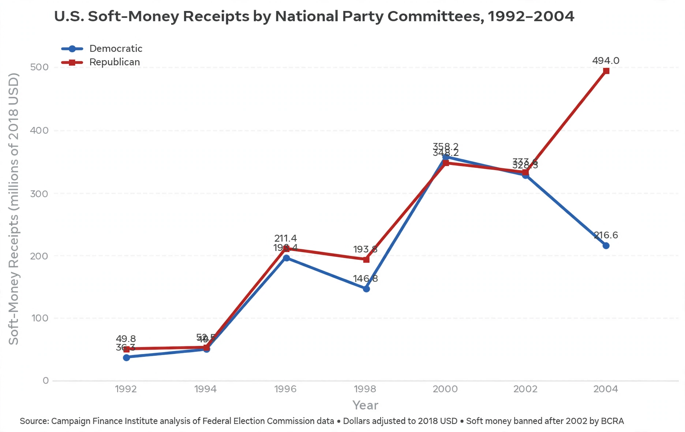

Soft money is a term used in United States campaign finance for money donated to political parties for purposes other than directly supporting or opposing a specific federal candidate — for example, party building, voter registration, and generic "issue ads". Because such donations were not subject to the federal contribution limits and source prohibitions that govern "hard money", soft money could be raised in unlimited amounts from corporations, unions, and wealthy individuals.
The soft-money loophole developed after the 1970s campaign finance reforms, through Federal Election Commission rulings that allowed state and local parties to spend mixes of regulated and unregulated funds on shared activities. By the 1990s, national parties were raising hundreds of millions of dollars in soft money, much of it effectively funding advertising that benefited federal candidates, prompting criticism that the limits on direct contributions had been circumvented.
The Bipartisan Campaign Reform Act of 2002 (McCain–Feingold) prohibited national parties from raising or spending soft money and restricted its use by state parties in federal elections; the Supreme Court upheld the ban in McConnell v. FEC (2003). After the ban, funds migrated to outside groups such as 527 organisations and, after 2010, super PACs (see political action committee), leading some commentators to argue that money was displaced rather than removed from politics.
See also: Bipartisan Campaign Reform Act · Campaign finance in the United States · 527 organization